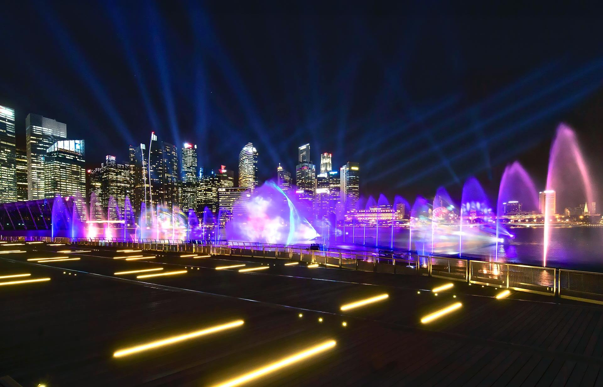

🏙️ Marina Bay Sands
Marina Bay Sands is Singapore's most iconic integrated resort and a modern marvel that defines the city’s skyline. With its three soaring towers topped by the world-famous SkyPark, it offers luxurious experiences in hospitality, shopping, dining, and entertainment.
The architectural masterpiece stands out with its unique design and is home to over 2,500 hotel rooms, a rooftop infinity pool, a massive shopping mall, and the ArtScience Museum. It’s a must-visit destination, even if you're not staying at the hotel.
Top Attractions at Marina Bay Sands:
-
SkyPark Observation Deck:
📍 Location: Marina Bay Sands, 10 Bayfront Avenue, Singapore 018956
🏙️ Overview: Located atop Marina Bay Sands, the SkyPark Observation Deck offers breathtaking 360-degree views of the Singapore skyline, Gardens by the Bay, and the busy harbor.
🎡 What You’ll See:- Iconic skyline and Marina Bay views
- Bird’s-eye view of Gardens by the Bay and the Singapore Flyer
- Panoramic photo opportunities day and night
- Infinity pool access for hotel guests only
🕐 Opening Hours: 11 AM – 9 PM daily
🌟 Tips:- Visit at sunset for the best views and golden hour photos
- Book tickets online in advance to avoid long queues
- Bring a wide-angle camera for panoramic shots
-
Infinity Pool:
📍 Location: Marina Bay Sands, 10 Bayfront Avenue, Singapore 018956 (Level 57, Hotel Tower 3)
🏙️ Overview: The world-famous rooftop Infinity Pool at Marina Bay Sands is the highest and longest elevated pool globally, offering spectacular views of the Singapore skyline.
🌊 What You’ll Experience:- Swim along the 150-meter infinity edge
- Uninterrupted skyline and sunset views
- Luxury cabanas and poolside service
- Access to the pool deck bar and restaurants
🕐 Opening Hours: 6 AM – 11 PM daily (hotel guests only)
🌟 Tips:- Only accessible to hotel guests—book a stay for access
- Go early morning or sunset for fewer crowds and better views
- Don’t forget your camera—it’s one of the most Instagrammed spots in the world!
-
The Shoppes at Marina Bay Sands:
📍 Location: 10 Bayfront Avenue, Singapore 018956 (Within Marina Bay Sands Complex)
🏙️ Overview: The Shoppes is Singapore’s most iconic luxury shopping mall, known for its elegant architecture, canal rides, and premium boutiques.
🛍️ What You’ll Find:- Designer Labels: Chanel, Cartier, Hermes, Bvlgari
- High-Street Brands: Sephora, Charles & Keith
- Entertainment: Sampan boat rides, Digital Light Canvas
- Fine Dining: CUT by Wolfgang Puck, Waku Ghin, and celebrity restaurants
🕐 Opening Hours: 10:30 AM – 11 PM (Sun–Thu), till 11:30 PM (Fri–Sat)
🌟 Tips:- Take a Sampan boat ride through the indoor canal
- Visit at night for stunning reflections and light shows
- Look out for occasional fashion and art installations
-
ArtScience Museum:

📍 Location: 6 Bayfront Avenue, Singapore 018974 (Next to Marina Bay Sands)
🏙️ Overview: Shaped like a lotus flower, the ArtScience Museum blends art, science, culture, and technology in stunning exhibitions designed to inspire all ages.
🧠 What You’ll Explore:- Future World: An interactive digital universe created by teamLab
- Rotating Exhibits: From Van Gogh to Marvel Studios and space explorations
- Hands-on activities for kids and families
- Stunning photo zones with immersive light displays
🕐 Opening Hours: 10 AM – 7 PM daily (last admission at 6 PM)
🌟 Tips:- Book online for discounted combo tickets with Future World
- Visit on weekdays for fewer crowds
- Ideal for families, creatives, and science lovers alike
-
Spectra – Light & Water Show:

📍 Location: Event Plaza, Marina Bay Sands, 2 Bayfront Avenue, Singapore 018972
🏙️ Overview: Spectra is a stunning outdoor light and water show that blends visual storytelling, dancing fountains, colorful lasers, and music—all against the Marina Bay skyline.
🌈 What You’ll Experience:- 15-minute multimedia extravaganza with water projections
- State-of-the-art lasers and colorful visual effects
- Beautiful symphonic soundtrack
- Panoramic night views of the city
🕐 Showtimes:- Sunday – Thursday: 8 PM & 9 PM
- Friday & Saturday: 8 PM, 9 PM & 10 PM
- Arrive early for the best waterfront seating at Event Plaza
- Great spot for night photography
- Free to watch – no ticket required!
Marina Bay Sands also hosts world-class performances at its theatre and offers access to the Marina Bay waterfront for scenic strolls, photography, and events.
Location:
10 Bayfront Ave, Singapore 018956
How to Get There:
Take the MRT to Bayfront Station (CE1/DT16), which is directly connected to the resort. Alternatively, enjoy a walk along the Helix Bridge from Esplanade or the Merlion Park.
Nearby Attractions:
- Gardens by the Bay
- Helix Bridge
- Merlion Park
- Singapore Flyer
Tips for Visitors:
- Visit the SkyPark at sunset for the best skyline photos.
- Book tickets online in advance for the ArtScience Museum or observation deck.
- Evenings are ideal for enjoying the light show and waterfront ambiance.
- Dress smart if you plan to dine in celebrity restaurants inside.